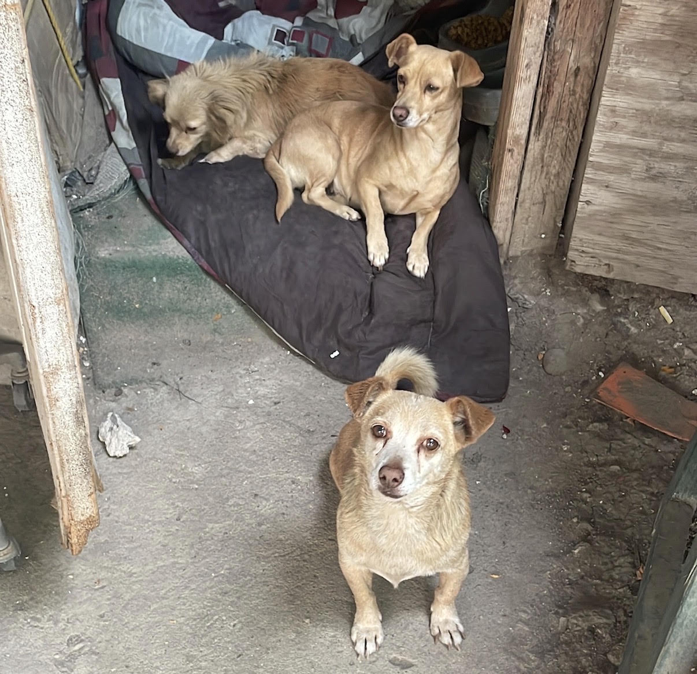

Lista de Necesidades

Apóyanos con los siguientes insumos para el cuidado de los animales:
- Alimentos: Croquetas para perro y gato, así como alimento húmedo.
- Abrigo: Cobijas, mantas y suéteres en buen estado.
- Higiene: Desinfectantes, jabón, escobas y periódicos.
- Médico: Material de curación básico (gasas, antisépticos).